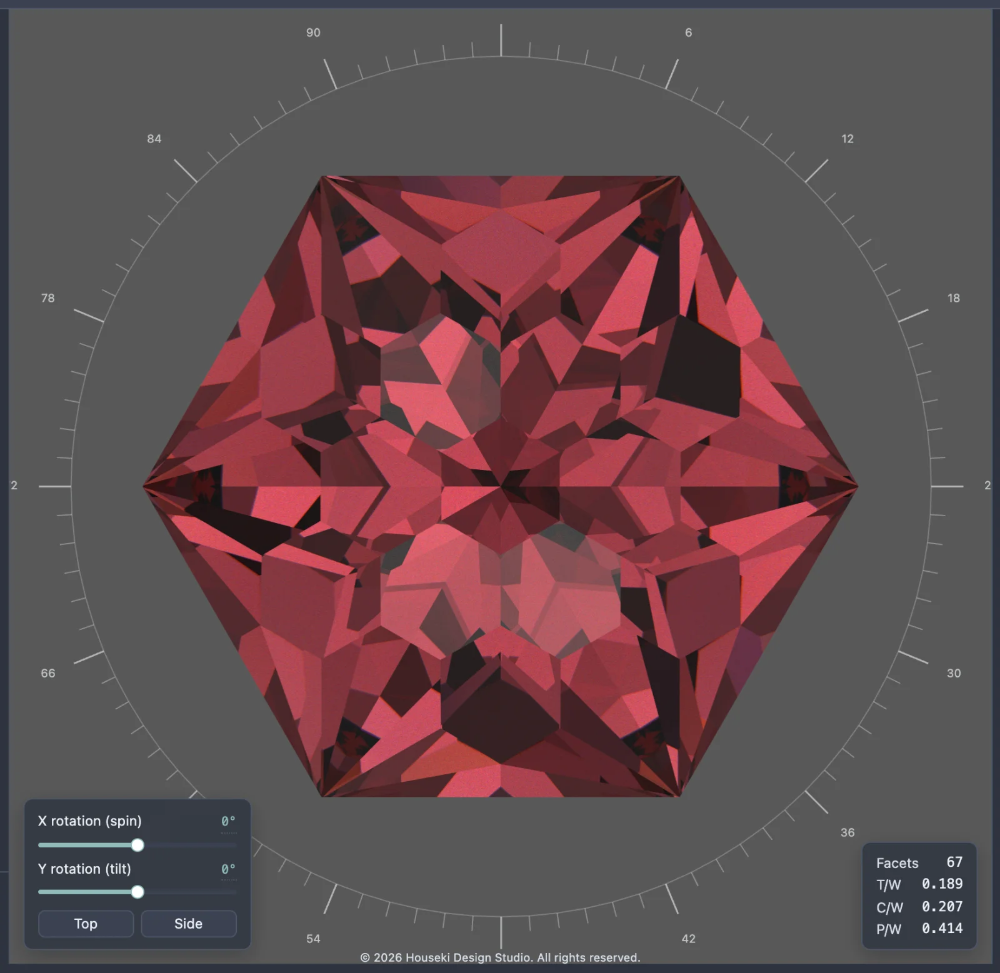
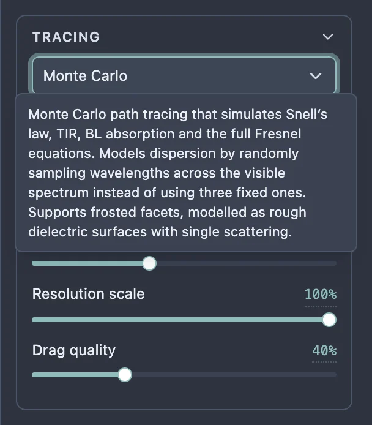
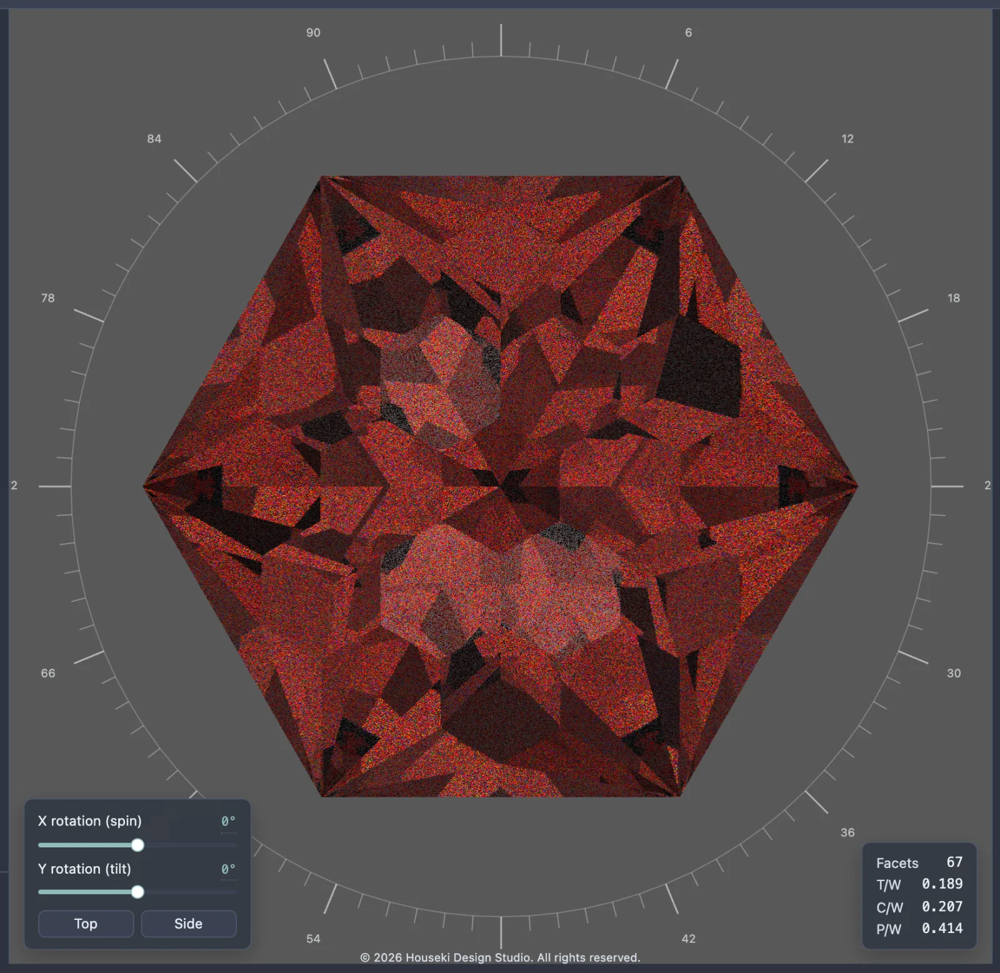
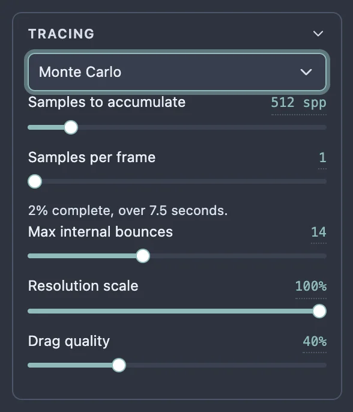
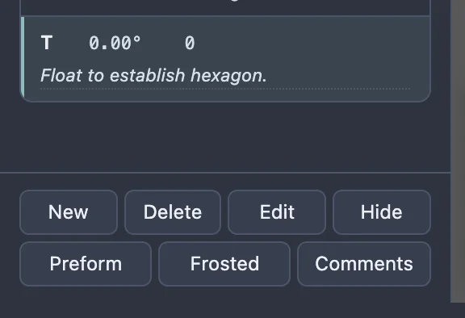
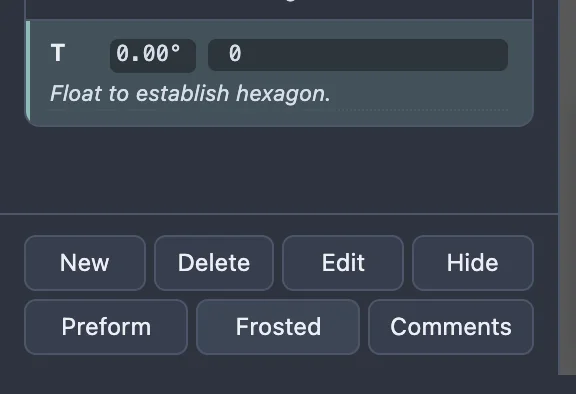
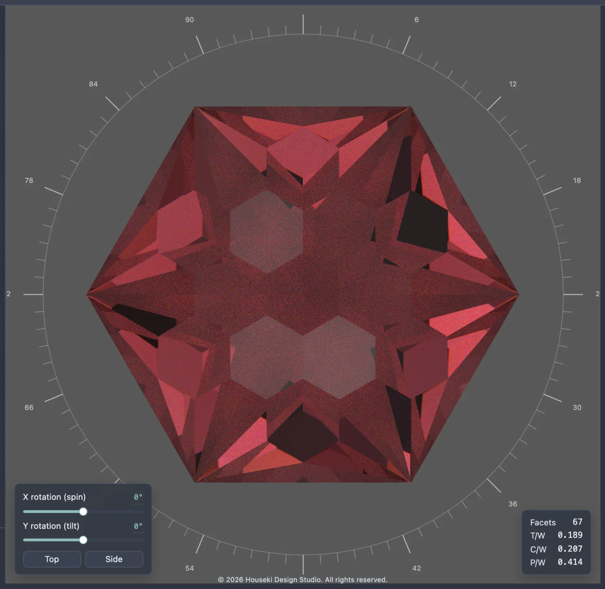

The Monte Carlo renderer is the studio's slower, more realistic renderer. Rather than drawing a finished picture in one pass, it builds the image up sample by sample, starting grainy and sharpening the longer the stone is left alone. It traces colour across the whole visible spectrum rather than a handful of fixed colours, which gives it smoother, more natural fire, and it is the only renderer that can show frosted facets.

Open the dropdown at the top of the Tracing section of the settings and choose Monte Carlo (the other choices are Deterministic and Flat – see the Deterministic renderer page for those). Hovering the dropdown shows a tooltip describing the selected renderer.

The first time the Monte Carlo renderer is selected in a session there can be a brief pause before the first image appears. Switching back and forth after that is instant.
The moment the Monte Carlo renderer is selected, or anything about the view or the stone changes, the picture restarts from scratch: a single noisy, grainy sample. Left alone, it keeps adding more samples on top of each other, and the noise fades as more accumulate. A line under the Tracing settings reports progress as a percentage and how long it has been running, ending "(converged)" once it stops improving – for example, "100% complete, over 12 seconds (converged)."

Any change restarts it. Turning the stone, changing a material, moving a slider, or resizing the window all throw away the samples gathered so far and start again from a single noisy sample. That includes the resolution and quality settings below: raising them buys a sharper final image at the cost of restarting the wait.
The Monte Carlo renderer follows the same physical rules as the Deterministic renderer – Snell's law bending light as it crosses into and out of the stone, total internal reflection giving the stone its brilliant flashes, the full Fresnel equations deciding how much of the light at each surface reflects versus passes through, and Beer-Lambert absorption giving a coloured stone its body colour – see that page for what each looks like on the stone.
Where it differs is dispersion, the fire a stone throws by bending different colours of light by slightly different amounts. Instead of tracing three fixed colours, the Monte Carlo renderer randomly samples colours from across the whole visible spectrum, one wavelength at a time, so its fire builds up into a smooth rainbow rather than a few coloured edges. It uses the same Dispersion (fire) slider as the Deterministic renderer, under Material, to decide how much fire to show.
Every Material and Lighting control works the same as it does for the Deterministic renderer (refractive index, dispersion, stone colour and opacity, the lighting model, head shadow, background and window colours – see the Deterministic renderer page for what each one does). The Tracing section adds two controls that only apply here, and hides one that the Monte Carlo renderer does not use:

Drag the stone with the mouse to orbit it, and scroll the mouse wheel to zoom, exactly as with the other renderers. While the stone is moving – dragging, scrolling, or moving the X rotation (spin) or Y rotation (tilt) sliders – the picture drops to Drag quality so it can keep up, and only starts gathering samples towards a settled image once the movement stops. A slider's readout can also be clicked to type an exact number: type the value and press Enter to apply it, or Escape to cancel.
The Monte Carlo renderer is the only one that can show a facet as frosted: rough rather than glass-smooth, so it scatters light instead of reflecting and refracting it cleanly. To frost a facet, select the tier it belongs to in the cutting instructions on the left – click its row, or use ↑/↓ to move the selection to it – then click Frosted in the row of buttons under the cutting instructions. The tier's row turns bold to show it is marked, and every facet in that tier renders frosted the next time the Monte Carlo renderer draws it. Click Frosted again to unmark it.



Frosted facets are only ever shown by the Monte Carlo renderer. Switching to Deterministic or Flat draws every facet polished, whether or not it is marked frosted.